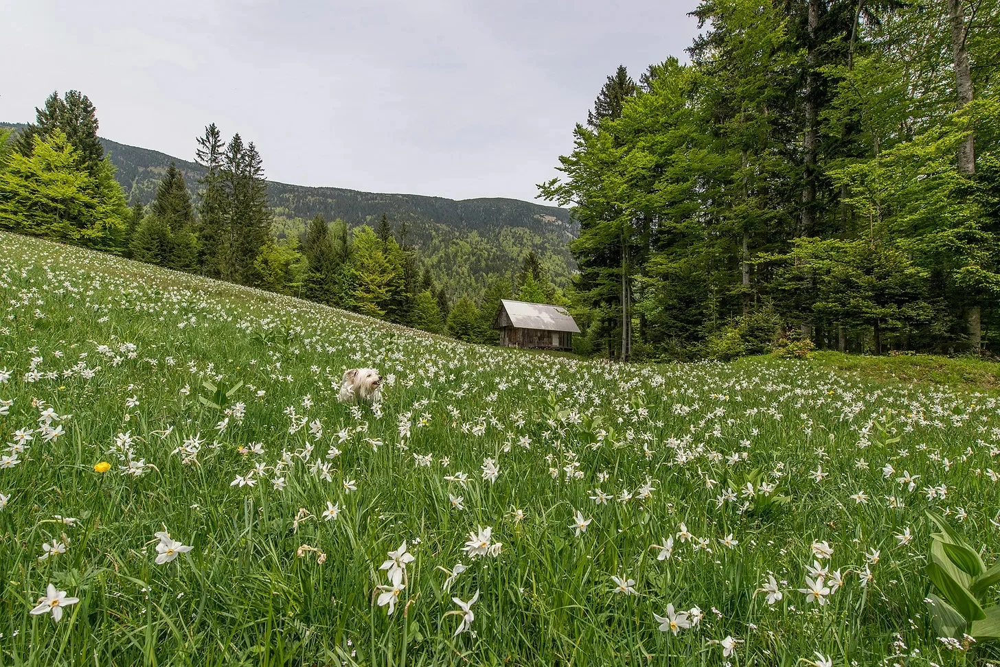

엘리베이터 문이 로비 대신 초원으로 열렸을 때, 계단을 탔어야 했다는 걸 직감했다.
[When the elevator doors opened to a meadow instead of the lobby, I knew I should’ve taken the stairs.]
들꽃 향기가 퍼졌고, 평소에 맡던 탄 커피와 카펫 클리너 냄새와는 전혀 달랐다. 두 번 눈을 깜빡이고 넥타이를 고쳐 매고는 밖을 내다봤다. 바람도 느껴지지 않는데, 끝없이 펼쳐진 초원은 형형색색의 꽃들로 가득했고 그 꽃들은 흔들리고 있었다.
[The scent of wildflowers wafted in, a stark contrast to the usual aroma of burnt coffee and carpet cleaner. I blinked twice, adjusted my tie, and peeked out. The meadow stretched endlessly, dotted with colorful blooms swaying in a breeze I couldn’t feel.]
“올라갈 건가, 내려갈 건가?” 누군가 물었다.
[“Going up or down?” a voice asked.]
고개를 돌리니, 아까까지만 해도 없던 나무에 기대어 있는 작은 인물이 보였다. 그는 깔끔한 정장에 빨간 넥타이를 매고 있었고, 매끈하게 뒤로 넘긴 머리카락 사이로 작은 뿔 같은 게 보였다.
[I turned to see a small figure lounging against a tree that hadn’t been there a second ago. He wore a crisp suit, red tie, and—were those tiny horns peeking through his slicked-back hair?]
“어, 나 로비로 가려고 했는데,” 내가 말했다.
[“Uh, I was trying to get to the lobby,” I managed.]
그는 웃었다. “로비? 그럼 확실히 버튼을 잘못 눌렀네.” 그는 주머니에 손을 넣고 성큼성큼 다가왔다. “내 이름은 루야.”
[He chuckled. “Lobby? Well, you’ve certainly pressed the wrong button for that.” He sauntered over, hands in his pockets. “Name’s Lou.”]
“난 댄이야,” 나는 그와 악수를 나누며 말했다. 손이 놀랍게도 따뜻했다.
[“Dan,” I replied, shaking his surprisingly warm hand.]
“그래서, 댄, 뭐가 그렇게 급한 거야?”
[“So, Dan, what’s got you in such a hurry?”]
나는 다시 엘리베이터를 봤지만, 문은 사라져 있었다. “회의가 있어. 중요한 회의.”
[I glanced back at the elevator, but the doors had vanished. “I have a meeting. Important one.”]
“아, 분기 보고서, 숫자들, 원형 차트,” 루가 눈을 굴리며 말했다. “정말 흥미진진하겠네.”
[“Ah, the quarterly reports, the numbers, the pie charts,” Lou said, rolling his eyes. “Sounds riveting.”]
“그게 내 일이야,” 나는 방어적으로 말했다.
[“It’s my job,” I said defensively.]
그는 꽃을 하나 뽑아 돌리며 고개를 끄덕였다. “인생이 스프레드시트랑 회의 전화 말고 더 있지 않을까 하는 생각, 해본 적 있어?”
[He nodded, plucking a flower and twirling it. “Ever wonder if there’s more to life than spreadsheets and conference calls?”]
“이봐, 무슨 일이 벌어지고 있는지 모르겠지만, 난 정말 돌아가야 해.” 나는 주머니를 더듬었지만, 핸드폰이 없었다.
[“Listen, I don’t know what’s going on, but I really need to get back.” I patted my pockets for my phone, but it was missing.]
루는 한숨을 쉬었다. “항상 급하지, 인간들은. 잠깐만 앉아봐.” 우리 옆에 나무 벤치가 나타났다.
[Lou sighed. “Always in a rush, you humans. Sit with me a moment.” A wooden bench appeared beside us.]
모든 논리적 충동에도 불구하고, 나는 앉았다. 아마 이건 스트레스 때문에 생긴 환각일지도 몰랐다. 아니면 드디어 HR에서 휴가를 의무적으로 주려는 걸까.
[Despite every logical impulse, I sat. Maybe this was a stress-induced hallucination. Maybe HR would finally mandate those vacation days.]
“한 번 맞혀볼까,” 루가 말을 꺼냈다. “넌 요즘… 만족스럽지 않지?”
[“Let me guess,” Lou began. “You’ve been feeling… unfulfilled?”]
나는 어깨를 으쓱했다. “일이 힘들었어.”
[I shrugged. “Work’s been tough.”]
“집에서는?”
[“And home?”]
나는 잠시 망설였다. “거기도 별로 나을 게 없어.”
[I hesitated. “Not much better.”]
그가 앞으로 몸을 기울였다. “내가 뭔가 다른 걸 제안할 수 있다고 하면 어때?”
[He leaned forward. “What if I told you I could offer you something different?”]
나는 비웃었다. “뭐, 파라다이스에서 타임쉐어라도?”
[I smirked. “Like what? A timeshare in paradise?”]
그가 웃었다. “비슷한 셈이지.” 우리 주위의 초원이 변하며 하늘이 짙은 붉은색으로 물들었다. “네가 상상도 못할 성공을 줄 수 있어. 행복, 인정, 그 모든 것.”
[He grinned. “In a manner of speaking.” The meadow around us shifted, the sky turning a deep crimson. “I can give you success beyond your wildest dreams. Happiness, recognition, the works.”]
나는 일어섰다. “이거 너무 이상해지고 있어.”
[I stood up. “Okay, this is getting weird.”]
그는 그대로 앉아 있었다. “내가 바라는 건 네 감사의 작은 표시일 뿐이야.”
[He remained seated. “All I ask in return is a small token of your appreciation.”]
“뻔하지, 내 영혼이겠지?”
[“Let me guess—my soul?”]
그는 웃었다. 그 웃음소리가 기이하게 울려 퍼졌다. “영혼, 첫째 자식, 뭐 그런 거지. 근데 나 꽤 유연해.”
[He laughed, a sound that echoed unnaturally. “Soul, firstborn child, standard stuff. But I’m flexible.”]
나는 고개를 저었다. “아니, 됐어. 사양할게.”
[I shook my head. “No, thanks. I’ll pass.”]
루는 눈썹을 치켜올렸다. “확실해? 평생에 한 번뿐인 제안인데.”
[Lou raised an eyebrow. “Are you sure? This is a once-in-a-lifetime offer.”]
나는 늦은 밤들, 텅 빈 아파트, 삶이 흘러가는 듯한 기분을 떠올렸다. “왜 나지?”
[I thought about the late nights, the empty apartment, the creeping sense that life was passing me by. “Why me?”]
그는 어깨를 으쓱했다. “적당한 장소, 적당한 시간. 아니면 네 관점에 따라 잘못된 장소, 잘못된 시간일 수도 있고.”
[He shrugged. “Right place, right time. Or perhaps wrong place, wrong time, depending on your perspective.”]
주위를 둘러봤다. 초원은 이제 황폐한 땅이 되었고, 꽃들은 시들어 있었다. “무슨 일이 일어나고 있는 거야?”
[I looked around. The meadow was now a barren landscape, the flowers wilted. “What’s happening?”]
“시간이 얼마 안 남았어,” 그가 말했다. “이런 기회는 영원하지 않아.”
[“Time’s running out,” he said. “Opportunities like this don’t last forever.”]
나는 눈을 감고 깊이 숨을 들이쉬었다. “아니. 내 길은 내가 찾을게.”
[I closed my eyes, took a deep breath. “No. I think I’ll find my own way.”]
눈을 떴을 때, 다시 엘리베이터 안이었다. 문이 열리며 로비가 보였고, 동료가 급히 들어왔다.
[When I opened my eyes, I was back in the elevator. The doors slid open to the lobby, just as a coworker rushed in.]
“댄! 여기 있었네. 회의 곧 시작해,” 그녀가 말했다.
[“Dan! There you are. Meeting’s about to start,” she said.]
나는 엘리베이터에서 나왔다. 형광등 불빛이 눈에 거슬렸다. “그래, 곧 갈게.”
[I stepped out, the fluorescent lights harsh against my eyes. “Yeah, I’ll be right there.”]
그녀가 멈춰 섰다. “괜찮아? 귀신이라도 본 것 같은데.”
[She paused. “You okay? You look like you’ve seen a ghost.”]
억지로 미소를 지었다. “그냥… 이제부터는 계단을 이용할까 생각 중이야.”
[I forced a smile. “Just… thinking about taking the stairs from now on.”]
그녀가 서둘러 떠나자, 나는 손에 무언가가 들려 있는 걸 눈치챘다—완벽하게 보존된 들꽃 한 송이였다.
[As she hurried off, I noticed something in my hand—a single, perfectly preserved wildflower.]
나는 그 꽃을 주머니에 넣고 회의실로 향했다. 사무실의 소음이 나를 감쌌다: 울리는 전화 소리, 타닥타닥거리는 키보드 소리, 멀리서 들리는 복사기 소리. 하지만 뭔가 달랐다.
[I tucked it into my pocket and headed toward the conference room. The hum of office life enveloped me: phones ringing, keyboards clacking, the distant sound of a copier. But something was different.]
자판기를 지나가다가 충동적으로 초콜릿 바를 하나 샀다. 첫 입은 기억보다 훨씬 진했다. 짐의 책상에 들러봤다—그는 항상 최고의 농담을 하곤 했는데—이번엔 그 이야기를 제대로 들어주었다. 회의에서 낙서를 하는 대신, 집중해서 듣고 아이디어도 몇 개 냈다.
[I passed by the vending machine and, on a whim, bought a chocolate bar. The first bite was richer than I remembered. I stopped by Jim’s desk—he always had the best jokes—and actually listened for once. In the meeting, instead of doodling in the margins, I paid attention, even contributing an idea or two.]
점심시간이 되자, 나는 초원에서 봤던 벤치와 비슷한 벤치에 앉아 있었다. 주머니에서 들꽃을 꺼내 손가락 사이로 돌렸다.
[By lunchtime, I found myself outside, sitting on a bench not unlike the one in the meadow. I pulled out the wildflower, twirling it between my fingers.]
“같이 앉아도 될까요?” 누군가 물었다.
[“Mind if I join you?” a voice asked.]
고개를 들자 샌드위치를 들고 있는 여자가 보였다. 그녀의 눈에는 하늘이 비쳤다. “그럼요,” 내가 말했다.
[I looked up to see a woman holding a sandwich, her eyes reflecting the sky. “Sure,” I said.]
우리는 잠시 편안한 침묵 속에 앉아 있었다.
[We sat in comfortable silence for a moment.]
“정말 예쁜 꽃이네요,” 그녀가 말했다.
[“That’s a beautiful flower,” she remarked.]
“내려오는 길에 주웠어요,” 내가 말했다.
[“Found it on my way down,” I said.]
그녀가 미소 지었다. “우리가 가야 할 곳에 너무 집착하느라 바로 앞에 있는 걸 놓칠 때가 있죠.”
[She smiled. “Sometimes we miss what’s right in front of us, caught up in where we’re supposed to be going.”]
나는 묘한 데자뷰를 느끼며 고개를 끄덕였다.
[I nodded, feeling a strange sense of déjà vu.]
하루가 끝나갈 무렵, 나는 짐을 싸기 시작했고, 사무실은 점점 비어갔다. 이번에는 계단을 이용했다. 한 걸음 한 걸음이 나를 현실에 더 단단히 붙잡아 주었다.
[As the day wound down, I packed up my things, the office emptying around me. I took the stairs this time, each step grounding me further into reality.]
밖에서는 도시가 북적였지만, 나는 천천히 걸으며 빛이 건물에 반사되는 모습과 스쳐가는 대화들을 주의 깊게 살폈다.
[Outside, the city buzzed, but I walked slowly, noticing the way the light played off the buildings, the snippets of conversations floating by.]
모퉁이에서, 빨간 넥타이를 맨 익숙한 인물이 보였다. 루가 모자를 살짝 들며 장난기 어린 눈빛을 보였다.
[At the corner, I saw a familiar figure in a red tie. Lou tipped his hat, a mischievous glint in his eye.]
“다음에 또 보자고,” 그가 외쳤다.
[“Until next time,” he called out.]
나는 손을 흔들었지만, 그가 실제로 존재하는 건지 아니면 내 과한 상상력의 산물인지 확신할 수 없었다.
[I waved, not entirely sure if he was real or just a figment of my overactive imagination.]
어쨌든, 나는 마음이 한결 가벼워진 기분이었다. 내가 몰랐던 무거운 짐이 드디어 내려간 것처럼.
[Either way, I felt lighter, as if a weight I hadn’t known I’d been carrying was finally lifted.]
그날 저녁, 나는 들꽃을 물이 담긴 유리잔에 넣어 침대 머리맡에 두었다. 잠에 빠져들면서, 내가 조금만 더 주의를 기울이면 어떤 문들이 열릴지 궁금해졌다.
[That evening, I placed the wildflower in a glass of water by my bedside. As I drifted off to sleep, I couldn’t help but wonder what other doors might open if I just paid a little more attention.]